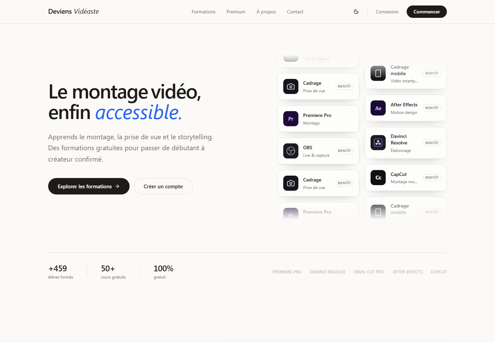

de vues générées
sur les formats longs
Disponible pour de nouveaux projets
Des images quifont grandir leshistoires.
Montage, cadrage et post-production pour des contenus qui captent l’attention et gardent le bon rythme.
✦

Showreel 2024—202501:24 min
Impact cumulé
vues générées
sur les contenus courts
vidéos livrées
depuis 2023
Ce que je fais de mieux
Tout ce qu’il faut pour transformer des images en contenu mémorable.
01 · ÉNERGIE
Divertissement
Des formats incarnés, rythmés et généreux, pensés pour maintenir l’attention et faire vivre chaque moment fort.
Voir les projets
02 · INTENSITÉ
Sport
Capter le geste, l’effort et l’émotion avec une narration qui donne du souffle aux performances et aux défis.
Voir les projets
03 · PROXIMITÉ
Vlog / Lifestyle
Une image naturelle et un montage vivant pour raconter les coulisses, les voyages et les histoires du quotidien.
Voir les projets
04 · CLARTÉ
Corporate
Des films clairs, humains et soignés pour présenter une marque, un savoir-faire ou une équipe sans perdre le rythme.
Voir les projets
Contenus courts
Six emplacements dédiés aux Reels, Shorts et TikToks.


Projet personnelDepuis 2025
J’ai créé l’école vidéo
que j’aurais aimé trouver.

FORMATION · COMMUNAUTÉ · PRODUIT
Deviens Vidéaste
Une plateforme gratuite pour apprendre le montage, la prise de vue et le storytelling. Je l’ai pensée, produite et développée de A à Z.
459+élèves50+cours100%gratuit
Voir les coulisses du projet ↗
À proposDisponible pour collaborer
Je filme l’énergie.
Je monte l’histoire.
Monteur vidéo, cadreur et créateur de contenus, j’évolue entre productions YouTube, vidéos sponsorisées et dispositifs live. Mon terrain de jeu : transformer une vision en histoire claire, engageante et mémorable.
KQ
Killian Quelavoine
Île-de-France · FranceParcours04 ans d’expérience
Expériences
Zack Nani ProdMonteur vidéo / Cadreur · YouTube, contenus sponsorisés & live
01Vidéaste freelanceMontage, cadrage et création de contenus en Île-de-France
02Before ProductionMonteur vidéo / Cadreur · Divertissement YouTube
03Ben ProductionsMonteur vidéo & Cadreur · Réseaux sociaux et contenus clients
04Formation
ESD · École Supérieure du DigitalMastère Vidéo & Digital Contents
05Université Gustave EiffelBUT Métiers du multimédia et de l’Internet
06Le parcours completExpériences, compétences et formation
↗
Contact
Une idée à mettre en images ?
Parlons du format, du rythme et de ce que vous voulez faire ressentir.